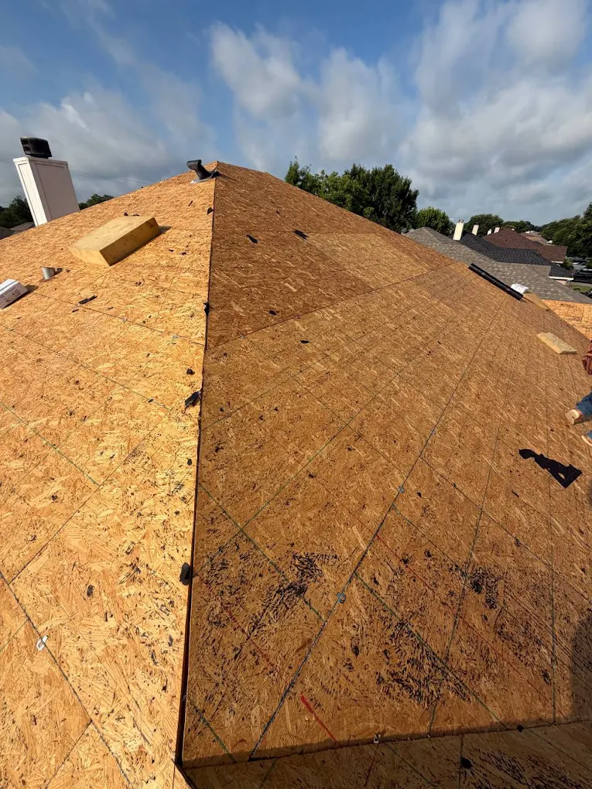
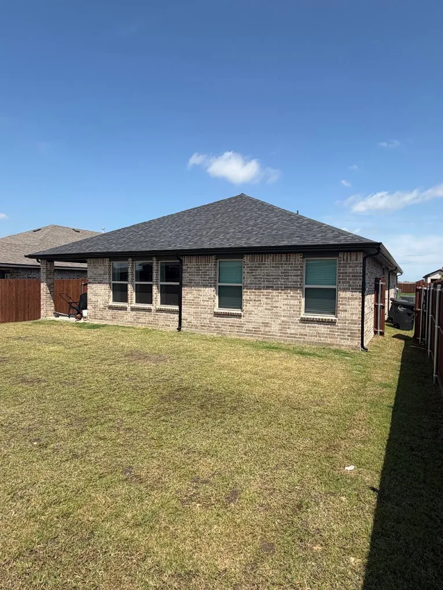
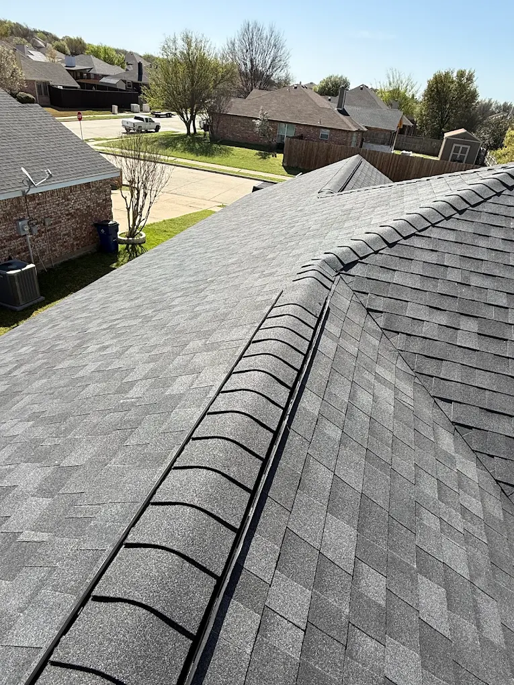

When repairs aren't enough, a full replacement is the only way to actually fix the problem. Here's exactly how we do it.

Some roofs can be patched. Others are past the point where a repair actually solves anything — the decking is failing, the shingles are worn out across the whole surface, or storm damage is spread out instead of isolated to one spot. In those cases, a full replacement is the honest answer, not an upsell.
A full 4P Roofing replacement means stripping the old roof down to bare decking, replacing any boards that are soft or rotted, sealing the whole deck with synthetic underlayment, and installing new dimensional shingles to manufacturer spec — proper nailing pattern, ridge ventilation, and flashing done right. Nothing gets covered up or built over.
Every layer of the old roof removed down to bare decking — no covering up what's underneath.
Any soft, rotted, or damaged decking boards replaced before anything new goes down.
A full sealed underlayment barrier across the entire deck before the shingles go on.
Every job fully insured from the first shingle pulled to the final nail driven.

